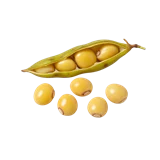

होम / अरहर

अरहर का भाव आज | Arhar / Tur Mandi Price Today
अरहर के आज के उपलब्ध मंडी भाव देखें—इंदौर, अमरेली, हरदा और राजकोट के मॉडल, न्यूनतम और अधिकतम रेट।
नीचे मंडी-वार सूची में अरहर के उपलब्ध भाव दिए हैं। मंडी के नाम पर क्लिक करके उस मंडी की दूसरी फसलों के भाव भी देख सकते हैं।
अरहर का भाव कैसे देखें और रेट किन बातों से बदलता है
अरहर को तूर भी कहा जाता है और इसका भाव दाल बाजार, दाने की गुणवत्ता तथा आवक से बदल सकता है। whole grain और processed दाल की कीमत अलग होती है।
आज का अरहर भाव कैसे देखें
इस पेज की मंडी-वार तालिका में न्यूनतम, मॉडल और अधिकतम भाव देखें। अपनी नज़दीकी मंडी तथा उपलब्ध दूसरी मंडियों के भाव की तुलना करके फैसला लेना अधिक उपयोगी रहता है।
- अपनी मंडी या राज्य चुनकर भाव देखें।
- न्यूनतम, मॉडल और अधिकतम भाव में अंतर समझें।
- पुराने और नए उपलब्ध रिकॉर्ड में फर्क देखकर निर्णय लें।
गुणवत्ता और ग्रेड का असर
दाने का आकार, रंग, सफाई, नमी और टूटे दानों की मात्रा अरहर के grade में अंतर लाती है। lot की गुणवत्ता के अनुसार बोली बदल सकती है।
आवक, मांग और बाजार
दाल मिलों की खरीद, नई फसल की आवक और उपलब्ध stock अरहर के बाजार को प्रभावित कर सकते हैं। MSP को सरकारी खरीद के संदर्भ में ही देखें।
अरहर बेचने या खरीदने से पहले ध्यान रखें
- अरहर और तैयार दाल के भाव न मिलाएँ।
- नमी और दाने की सफाई पर ध्यान दें।
- उपलब्ध मंडियों की range से तुलना करें।